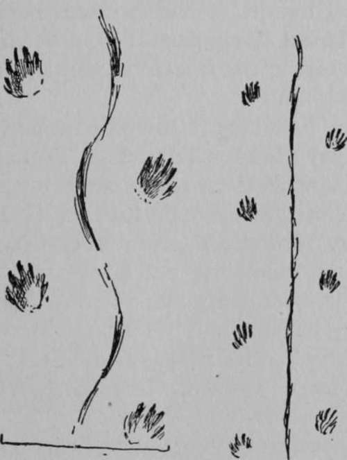

The Fox's Hunt
Description
This section is from the book "The Book Of Woodcraft", by Ernest Thompson Seton. Also available from Amazon: The Book of Woodcraft.
The Fox's Hunt
For a mile or two I followed my fox. Nothing happened. I got only the thought that his life was largely made up of nose investigation and unfavorable reports from the committee in charge. Then we came to a long, sloping hollow. The fox trotted down this, and near its lower end he got a nose report of importance for he had swung to the right and gone slowly - so said the short steps - zigzagging up the wind. Within fifteen feet, the tacks in the course shortened from four or five feet to nothing, and ended in a small hole in a bank. From this the fox had pulled out a common, harmless garter-snake, torpid, curled up there doubtless to sleep away the winter. The fox chopped the snake across the spine with his powerful meat-cutters, killed it thus, dropped it on the snow, and then, without eating a morsel of it as far as I could see, he went on with his hunt. (Illustration 11 A).
Why he should kill a creature that he could not eat I could not understand. I thought that ferocious sort of vice was limited to man and weasels, but clearly the fox was guilty of the human crime.
The dotted guide led me now, with many halts and devious turns, across a great marsh that had doubtless furnished many a fattened mouse in other days, but now the snow and ice forbade the hunt. On the far end the country was open in places, with clumps of timber, and into this, from the open marsh, had blown a great bank of soft and drifted snow.
Manitoban winters are not noted for their smiling geniality or profusion of outdoor flowers. Frost and snow are sure to come early and continue till spring. The thermometer may be for weeks about zero point. It may on occasion dip down to thirty, yes, even forty, degrees below, and whenever with that cold there also comes a gale of wind, it conjures up the awful tempest of the snow that is now of world-wide fame as-the blizzard.
No. II. The record of the Fox's hunt.
The blizzard is a terror to wild life out on the plains. When it comes the biggest, strongest, best clad, rush for shelter. They know that to face it means death. The prairie chickens or grouse have learned the lesson long ago. What shelter can they seek? There is only one - an Eskimo shelter - a snow house. They can hide in the shelter of the snow.
As the night comes, with the fearful frost and driving clouds of white, the chickens dive into a snowdrift; not on the open plain, for there the snow is hammered hard by the wind, but on the edge of the woods, where tall grass spears or scattering twigs stick up through and keep the snow from packing. Deep in this the chickens dive, each making a place for itself. The wind wipes out all traces, levels off each hole and hides them well. There they remain till morning, warm and safe, unless - and here is the chief danger - some wild animal comes by during the night, finds them in there, and seizes them before they can escape.
This chapter of grouse history was an old story to the fox and coming near the woodland edge, his shortened steps showed that he knew it for a Land of Promise. (Illustration 11, B).
At C he came to a sudden stop. Some wireless message on the wind had warned him of game at hand. He paused here with foot upraised. I knew it, for there was his record of the act. The little mark there was not a track, but the paw-tip's mark, showing that the fox had not set the foot down, but held it poised in a pointer-dog pose, as his nose was harkening to the tell-tale wind.
Then from C to D he went slowly, because the steps were so short, and now he paused: the promising scent was lost. He stood in doubt, so said the tell-tale snow in the only universal tongue. Then the hunter turned and slowly worked toward E, while frequent broad touches in the snow continued the guarantee that the maker of these tracks was neither docked nor spindle-tailed.
From E to F the shortened steps, with frequent marks of pause and pose, showed how the scent was warming - how well the fox knew some good thing was near.
At F he stood still for some time with both feet set down in the snow, so it was written. Now was the critical time, and straight up the redolent wind he went, following his nose, cautiously and silently as possible, realizing that now a single heedless step might spoil the hunt.
Closing In
At G were the deeply imprinted marks of both hind feet, showing where the fox sprang just at the moment when, from the spotless snowdrift just ahead, there broke out two grouse that had been slumbering below. Away they went with a whirr, whirr, fast as wing could bear them; but one was just a foot too slow; the springing fox secured him in the air. At H he landed with him on the prairie, and had a meal that is a fox's ideal in time of plenty; and now, in deep hard winter, it must have been a banquet of delight.
Now for the first time I saw the meaning of the dead garter-snake far back on the trail. Snake at no time is nice eating, and cold snake on a cold day must be a mighty cold meal. Clearly the fox thought so. He would rather take a chance of getting something better. He killed the snake; so it could not get away. It was not likely any one would steal from him that unfragrant carcass, so he would come back and get it later if he must.
But as we see, he did not have to do so. His faith and patience were amply justified. Instead of a cold, unpleasant snake, he fed on a fine hot bird.
Thus I got a long, autobiographical chapter of fox-life by simply following his tracks through the snow (see heading).
1. Tracks of old man.
2. " " a young hunter.
3. " " a city woman. 4. " " dog.
5. " " cat.
Snapping Turtle. Brook Turtle.
I never once saw the fox himself that made it, and yet I know - and you know - it to be true as I have told it.
Deer. Sheep. Pig.
Books And Articles Recommended
"Tracks in the Snow," By E. T. Seton, St. Nicholas, March, 1888, p. 338, many diagrams, etc.
"American Woodcraft," By E. T. Seton. 2 articles on tracks of animals. Ladies' Home Journal. May and June, 1902, many illustrations.
"The Life Histories of Northern Animals," Two large volumes by Ernest Thompson Seton, dealing with habits of animals, and give tracks of nearly all. Scribners, 1909.
"Tracks and Tracking," Joseph Brunner.
"The Official Handbook," Boy Scouts of America. Doubleday, Page & Co. 50 cents.
"Mammals of the Adirondacks," By C. Hart Merriam, M. D. Henry Holt & Co., New York City, Price $2.
Continue to:
Tags
bookdome.com, books, online, free, old, antique, new, read, browse, download